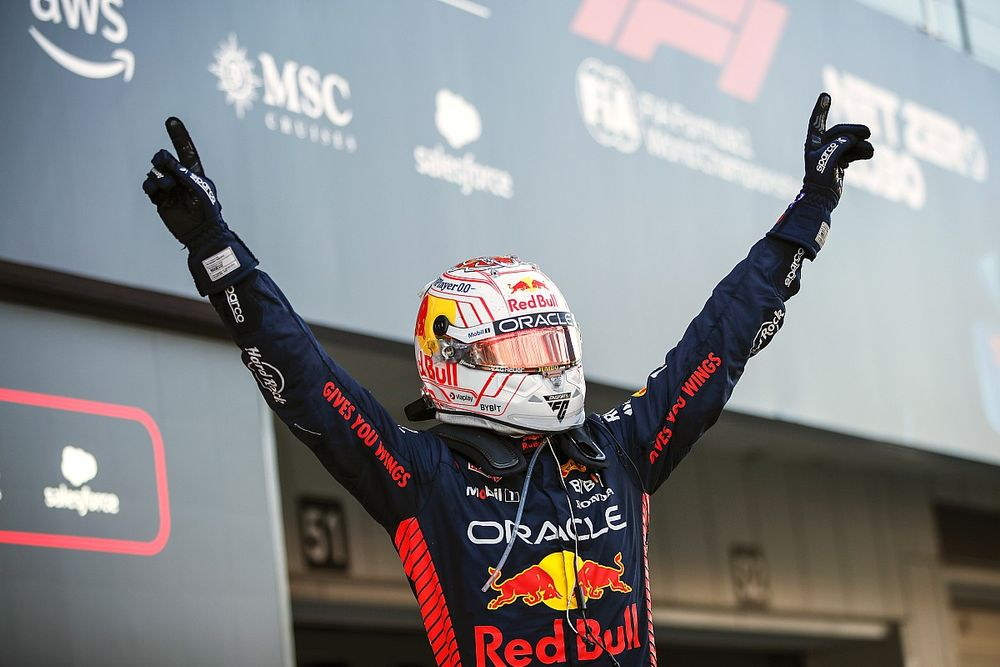

Max Verstappen, Rumo à Glória
Max Emillian Verstappen é um automobilista holandês, nascido na Bélgica. É o atual
campeão
da Formula 1, e conta com três títulos mundiais em sua estante (2021,2022,2023). Max pilota pela Oracle
Red Bul
Racing RBPT.
O gênio das pistas ingressou na Formula 1 em 2015. E foi pela equipe Toro Rosso, atual AlphaTauri, que
tudo começou.
Um garoto de apenas 16 anos, pilotando um carro com potencial de atingir velocidades de 350 km/h, com a
Força G atuando contra seu próprio corpo.
A Temporada de Estreia
O início de carreira de Verstappen foi muito pressionado, devido a sua idade e a confiança depositada
nele. O ainda garoto foi uma grande aposta do grupo Red Bull, que estava atrás de um novo futuro campeão
mundial, após a saída de Sebastian Vettel,
para a Scuderia Ferrari, equipe veterana e maior campeã dos Construtores.
